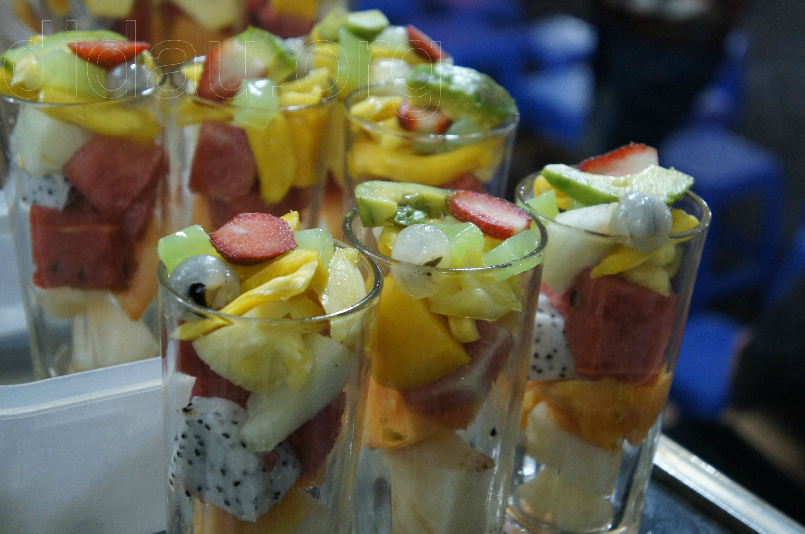

Khu vực Hoàn Kiếm
-
Hoa quả dầm
Địa chỉ: Tô Tịch, P. Hàng Gai, Quận Hoàn Kiếm
Chỉ cần nhắc đến hoa quả dầm là mọi người lại rủ nhau đến phố nhỏ Tô Tịch này. Bởi lẽ cũng vì sự đặc sắc, hương vị hấp dẫn khác lạ so với những nơi khác mà ở đây được giới trẻ rất ưa chuộng. Hoa quả dầm nhiều loại trộn hỗn hợp có xoài, dứa hấu, thơm, lê, nhãn, cùng trân châu nữa, khá thú vị, ăn ngọt mát hấp dẫn. Ăn một thì muốn hai nhé. -
Gà nướng Ò ó o
Địa điểm: 26 Xóm Hạ Hồi, Trần Hưng Đạo, Quận Hoàn Kiếm
Dân mạng đang ầm ĩ vè món gà Ó ò o này nên các bạn đừng bỏ lỡ cái món hấp dẫn này nhé. Gà quay ngon mê li. Thịt chín mềm thơm ngon và không bị dai. Ngon ngọt đến tận miếng cuối cùng. Đặc biệt là nước chấm của món này, nước chấm ngon cực kì. Nước chấm đầy đủ tương ớt cay (siêu cay) ai không ăn được cay lưu ý nhé.
-
Há cảo tôm
Địa điểm: Nhà hàng Hồng Kông – 73 Cầu Gỗ, Quận Hoàn Kiếm
Ẩm thực Hồng Kông hội tụ ở nhà hàng này hết nhé.Hầu hết món nào cũng ngon lắm a. Đến đây bạn đã thưởng thức món Há cảo tôm đỉnh nhất ở đây chưa. Món siêu ngon , vỏ mỏng vừa phải, mà nhân tôm giòn, ngọt thịt chấm tương thích dã man tàn bạo. Mình đến đây chả bao giờ bỏ qua món này đâu nhé. -
Trâm – Bánh mỳ sốt vang đình ngang
Địa điểm: 252 Hàng Bông, Quận Hoàn Kiếm
Bạn đã chán ăn bánh mì pate, bánh mỳ trứng, bánh mỳ xúc xích ở các qúan ven đường thì hãy đến đây để được ăn món bánh mỳ sốt vang mới lạ này nhé. Sốt vang được nấu vừa miệng, sóng sánh. Bát thịt được múc ra đầy thịt đẫm sốt luôn, thịt hầm nhừ, thơm ngọt. Bánh mì cũng được làm nóng ăn khá giòn. Bạn có thể gọi thêm bánh mì để ăn hết sốt nhé vì quá nhiều sốt mà. -
Khoai lang lắc xí muội
Địa điểm: 12 E Hàng Cót, Quận Hoàn Kiếm
Khoai lang lắc rầm rộ một thời và đối với giới trẻ nó chả phải là món ăn xa lạ gì nữa. Dù biết rằng món ăn vặt nó chỉ sốt một thời điểm nào đây thôi nhưng quán của chú Mập này chưa bao giờ hết hót bởi món ăn này.Được biết là trên phố Hàng Cót này đây là hàng đầu tiên bán khoai tây lắc, chưa kể anh chủ còn sáng tạo thêm tok lắc và ngô lắc rất là ngon. Miếng khoai luôn được cắt to dày, thấm vị, khoai ngọt nên ăn rất ưng. -
Miến và bánh đa cua Lý Quốc Sư
Địa điểm: số 6 Phùng Hưng, Quận Hoàn Kiếm
Một bát to đùng đầy đủ bánh đa, rau zút, thịt bò, chả, giò, đậu, gạch cua, hành khô… bánh đa đỏ hải phòng sợi to, dày và khá tơi. thịt bò dai dai, miếng thịt khá đầy đặn. Đậu rán phồng vỏ giòn, gạch cua cho cả tảng to lắm. Chả dày miếng, đầy đặn phết, giò nguyên miếng dài ăn mềm mềm, thích nhất là hành khô áy. Ở mỗi bàn đều có nguyên 1 hộp lạc to ụ để khách tự cho . Bạn tự nêm nếm giấm, ớt, quất và 1 chai xì dầu đầy và kem theo là 1 bát canh để húp cho dễ trôi. Ngon luôn cả bát canh nhé, đúng vị canh cua, ngọt thơm chất thật sự, ngon lắm ạ. Ăn vào nghiền luôn này. -
Fresh Shushi
Địa điểm: 14A Lương Ngọc Quyến, Quận Hoàn Kiếm
Shushi không phải là ai cũng ăn được đâu nhé, nhưng mà ai đã ăn là chỉ có nghiện thôi nè. Nằm vùng, theo dõi một thời gian dài mình đã tìm ra được quán Shushi ngon nhất hệ mặt trời cho các tín đồ nhé. Cửa hàng Fresh Sushi là một quán ăn Nhật nhỏ bé nằm lẳng lặng trên con phố Lương Ngọc Quyến đông đúc. Sushi ở đây được làm tại chỗ nên tươi ngon, miếng không quá to cũng không quá nhỏ.Đừng bỏ qua địa điểm này trong túi ẩm thực của các bạn nhé.